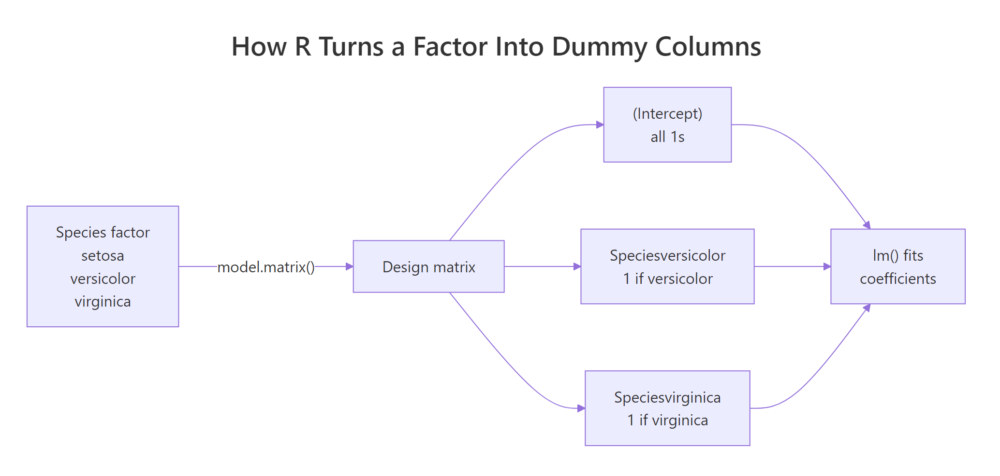
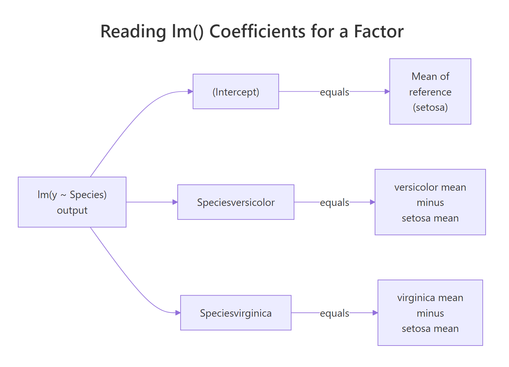
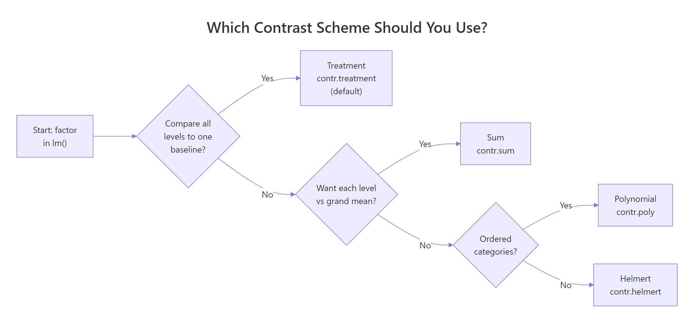

Dummy Variables in R: What lm() Does With Factor Predictors Under the Hood
Dummy variables in R are the 0/1 columns that lm() builds automatically whenever you pass a factor as a predictor. Every factor with k levels becomes k - 1 dummy columns, and R picks the first level alphabetically as the reference the other coefficients are measured against.
What happens when you put a factor in lm()?
Let's skip the theory for a minute and just fit a model. The iris dataset has a Species factor with three levels: setosa, versicolor, and virginica. We will regress Sepal.Length on Species and look at what R prints. The output will show two coefficients with funny names, not three, and that one missing coefficient will tell us everything we need to know about what lm() did behind the scenes.
Three species, but only two coefficients show up next to (Intercept). Where did setosa go? R did not drop it. It absorbed setosa into the intercept and now reports every other level as a difference from it. The value 5.006 is the mean Sepal.Length for setosa flowers. Add 0.930 and you get the mean for versicolor. Add 1.582 and you get the mean for virginica. Three numbers, three species, one intercept plus two dummies, and the arithmetic works out exactly.
Try it: Fit the same kind of model but with Sepal.Width on the left side. Then inspect the coefficient names. Which level became the reference, and what are the two dummy columns named?
Click to reveal solution
Explanation: Setosa is the reference because it is alphabetically first in levels(iris$Species). R names every dummy column by pasting the factor name to the level name, which is why you see Speciesversicolor rather than a plain versicolor.
How does R build the dummy variable matrix?
The coefficients in the previous block came from somewhere. Specifically, they came from R quietly turning the Species factor into numeric columns before handing them to the least-squares engine. That hidden set of columns is called the design matrix, and you can see it with model.matrix(). Looking at it is the single fastest way to stop treating factor handling as magic.
Read the rows one at a time. Row 1 is a setosa flower: the intercept column is 1 (always), and both dummy columns are 0. Row 51 is versicolor: intercept 1, versicolor dummy 1, virginica dummy 0. Row 101 is virginica: intercept 1, versicolor dummy 0, virginica dummy 1. Setosa has no dedicated column because "both dummies zero" is how R flags it. This is why a three-level factor produces two dummy columns, not three.

Figure 1: R routes a k-level factor through model.matrix() to produce k-1 dummy columns plus the intercept.
lm() would drop one anyway.Try it: Call model.matrix() on just the last three rows of iris and confirm the dummy values match your expectation. The last three rows are all virginica.
Click to reveal solution
Explanation: All three rows are virginica, so the Speciesvirginica column is 1 and Speciesversicolor is 0 for every row. The intercept column is always 1.
How do you interpret the coefficients of a factor?
The plain English reading is this: the intercept is the mean of the response variable in the reference group, and each dummy coefficient is the mean in that level minus the reference mean. You do not have to trust this interpretation; you can verify it by computing the group means and comparing them to coef(fit1) line by line.
The intercept 5.006 is exactly the setosa mean. The coefficient 0.930 on Speciesversicolor is the versicolor mean minus the setosa mean. The coefficient 1.582 on Speciesvirginica is the virginica mean minus the setosa mean. This is not an approximation. It is algebraically what least squares returns when the only predictors are dummy columns.

Figure 2: The intercept captures the reference group mean; each dummy coefficient captures how far a non-reference group sits from it.
relevel() instead of rewording or multiplying by -1. The model is the same; only the labels shift.Try it: Suppose a factor model returns an intercept of 12 and two coefficients groupB = 3 and groupC = -1. Without running any code, write down the three group means.
Click to reveal solution
The three group means are: A = 12 (the reference, equals the intercept), B = 12 + 3 = 15, and C = 12 + (-1) = 11. You add each coefficient to the intercept to recover that group's mean.
How do you change which level is the reference?
Alphabetical order is a convenience, not a decision. In iris, setosa happens to be a natural baseline because it is visibly the smallest-flowered species. In other datasets the alphabetical first level is a random category like "AL" for Alabama, which nobody wants to interpret as a baseline. relevel() lets you pick a reference that actually means something.
The intercept is now 6.588, the virginica mean. Setosa flipped to -1.582 because its mean is 1.582 below virginica's. Versicolor is -0.652 because its mean is 0.652 below. The model's predictions, residuals, and R-squared are identical to fit1; only the labels changed. You can also use factor() with an explicit levels = argument when you want full control over level order.
Both approaches produce the same fit as fit_rl. Use relevel() when you only need to swap the baseline. Use factor(..., levels = ...) when you also want to control how other levels appear in tables and plots.
Try it: Reset the reference to setosa using relevel() and confirm the coefficients match the original fit1 output.
Click to reveal solution
Explanation: relevel() pushes the named level to the front of levels(). Since the first level is always the reference, setting ref = "setosa" restores the original baseline, and the coefficients match fit1 exactly.
What if you want a coefficient for every level?
Sometimes the reference-plus-gaps parameterisation is awkward. You just want one coefficient per level, each equal to that level's mean. Dropping the intercept with - 1 in the formula does exactly that.
Now there are three coefficients, one per species, and each equals the species mean that you computed earlier with aggregate(). The model is mathematically the same as fit1: identical predictions, identical residuals, identical residual standard error. What changed is the parameterisation. You are just looking at the same surface from a different angle.
summary(fit1)$r.squared with summary(fit_noint)$r.squared and conclude the no-intercept model "fits better", the scales disagree.Try it: Read the three species means directly off the no-intercept coefficient table. Which species has the largest mean Sepal.Length?
Click to reveal solution
From coef(fit_noint): setosa = 5.006, versicolor = 5.936, virginica = 6.588. Virginica has the largest mean. The no-intercept parameterisation lets you read group means straight off the coefficient table without having to add the intercept to each.
How do factor interactions work in lm()?
So far each coefficient was a group-mean offset. Interactions add a second dimension: they let a numeric predictor's slope change across factor levels. The way R implements this is unglamorous, it multiplies the dummy columns by the numeric column to produce new interaction columns. Same framework, more columns.
The first two coefficients describe the reference species (setosa): intercept 4.7772 and Petal.Width slope 0.9131. The two Species* coefficients shift the intercept for versicolor and virginica. The two Petal.Width:Species* coefficients shift the slope. For versicolor, the fitted equation is (4.7772 + 1.3587) + (0.9131 - 0.1989) * Petal.Width. For virginica it is (4.7772 + 1.9468) + (0.9131 - 0.5580) * Petal.Width. Each species gets its own line.
The last two columns are Petal.Width multiplied by each dummy. For a setosa row (row 1), both dummies are 0 so both product columns are 0, and the fit reduces to the reference line. For a versicolor row (row 51), only the Speciesversicolor column is 1, so only the versicolor product column carries Petal.Width. For a virginica row, only the virginica product column carries it. Nothing deeper than multiplication is happening.
lm() never learns what a "species" is. It just adds columns to the design matrix and solves for the least-squares coefficients exactly the same way it always does.Try it: Given intercept 4.2, Petal.Width 0.9, Speciesversicolor 1.5, and Petal.Width:Speciesversicolor -0.3, compute the slope of Petal.Width for versicolor specifically.
Click to reveal solution
The versicolor slope is the reference slope plus the interaction: 0.9 + (-0.3) = 0.6. The intercept for versicolor would be 4.2 + 1.5 = 5.7. So the fitted equation for versicolor is Sepal.Length = 5.7 + 0.6 * Petal.Width. Notice that the main-effect Speciesversicolor coefficient of 1.5 only shifts the intercept, it does not affect the slope.
What contrast schemes exist besides treatment coding?
Treatment coding is the default in R, and it is what we have been using this whole time. But it is only one of four contrast schemes that ship with base R. Switching schemes does not change how well the model fits; it changes what the coefficients mean. Pick the scheme that answers your research question directly instead of doing arithmetic on coefficients to reverse-engineer the answer.
This is the treatment (dummy) matrix you have been looking at in model.matrix() the whole time. Each non-reference level gets its own column, with a 1 in the row for that level. Now switch to sum coding, which compares each level to the grand mean instead of to a reference.
The intercept is now 5.843, the grand mean of Sepal.Length across all three species. The coefficients Species1 and Species2 are deviations of setosa and versicolor from that grand mean; virginica's deviation is implied as the negative sum of the two. The model's predictions and R² are identical to fit1. Only the lens on the coefficients changed.

Figure 3: A decision flow for picking treatment, sum, polynomial, or Helmert contrasts based on your comparison question.
Try it: Reset iris_sum$Species contrasts to default treatment coding using contr.treatment(), refit the model, and confirm the coefficients match fit1.
Click to reveal solution
Explanation: contr.treatment(levels(...)) rebuilds the default dummy matrix using the current level order. Because the level order in iris_sum is still setosa, versicolor, virginica, the coefficients line up exactly with the original fit1.
Practice Exercises
These exercises combine multiple concepts from the tutorial. Use distinct variable names with the my_ prefix so your exercise code does not overwrite the tutorial variables.
Exercise 1: Verify a group mean from lm() coefficients
Using mtcars, convert cyl to a factor, fit mpg ~ cyl_f, and verify that the intercept plus the coefficient for the 6-cylinder dummy equals the mean mpg of 6-cylinder cars computed directly with aggregate(). Save the model to my_cyl_model and the check to my_cyl_check.
Click to reveal solution
Explanation: 4-cylinder is the reference (the numerically smallest factor level comes first). The intercept is the 4-cyl mean, and adding cyl_f6 = -6.921 recovers the 6-cyl mean of 19.74.
Exercise 2: Predict from an interaction model by hand
Using mtcars, convert cyl to a factor, fit mpg ~ cyl_f * wt, and predict mpg for a 6-cylinder car weighing 3.2 thousand pounds using only the raw coefficients (no predict() call). Store the result in my_prediction.
Click to reveal solution
Explanation: An interaction model gives each factor level its own intercept and slope. For 6-cylinder cars, you add the cyl_f6 dummy coefficient to the intercept and the cyl_f6:wt interaction to the wt slope, then plug in wt = 3.2. The hand-built number matches what predict() would return, confirming the mechanics.
Complete Example: a mini-analysis of mtcars
Let's tie it all together on mtcars. We will turn cyl and am into factors with human-readable labels, set the reference levels deliberately, fit a model that controls for weight, and interpret every coefficient in plain English.
Reading the coefficients one at a time: an 8-cylinder automatic car at zero weight (not a real car, just the math baseline) is predicted to do 31.0 mpg. Switching to 6 cylinders at the same weight and transmission adds 3.0 mpg. Four cylinders adds 6.9 mpg. A manual transmission adds 1.8 mpg. Every extra 1000 pounds of weight subtracts 3.2 mpg. The coefficient on wt is the same regardless of cylinder count because this model is additive, not interactive.
You can see the factor-to-dummy mechanics at work. The Mazdas are both 6-cylinder manuals with cyl_fsix = 1 and am_fmanual = 1. The Datsun is a 4-cylinder manual with cyl_ffour = 1. Their predicted mpg values come from plugging these 0/1 columns into the coefficient formula, and that is the whole story of how R handles categorical predictors in lm().
Summary
| Concept | R command |
|---|---|
| Fit a factor predictor | lm(y ~ f, data = df) |
| See the dummy columns | model.matrix(~ f, data = df) |
| Check the default contrasts | contrasts(df$f) |
| Change the reference level | relevel(df$f, ref = "level") |
| Control full level order | factor(x, levels = c(...)) |
| Drop the intercept for group means | lm(y ~ f - 1) |
| Factor-times-numeric interaction | lm(y ~ numeric * f) |
| Switch to sum coding | contrasts(df$f) <- contr.sum(n) |
Key takeaways:
- A factor with
klevels becomesk - 1dummy columns plus an intercept. The omitted level is the reference. - The intercept equals the reference group's mean (under default treatment coding). Every dummy coefficient is "this level's mean minus the reference's mean".
- Changing the reference with
relevel()shifts coefficient labels and values but never the predictions, residuals, or R². - Interactions between factors and numerics are just new design-matrix columns built by multiplying dummy columns by the numeric column.
- Treatment coding is the default; sum, Helmert, and polynomial coding exist for specific comparison questions. The fit is identical, the interpretation is not.
References
- R Core Team. An Introduction to R, §11.1 "Defining statistical models; formulae". Link
- Chambers, J.M. & Hastie, T.J. Statistical Models in S, 1992. Chapter 2 on design matrices and contrasts is the classic reference on how S and R build factor columns.
- Base R documentation for
contrastsandcontr.treatment. Link - UCLA OARC. Coding for Categorical Variables in Regression Models. Link
- STHDA. Regression with Categorical Variables: Dummy Coding Essentials in R. Link
- Faraway, J. Linear Models with R, 2nd ed., 2014, Chapter 14 "Categorical Predictors".
- Fox, J. & Weisberg, S. An R Companion to Applied Regression, 3rd ed., 2019, §4.3 "Factor Predictors". Link
Continue Learning
- Linear Regression Assumptions in R, diagnostic checks that still apply when your predictors are factors.
- Linear Regression, the base
lm()workflow for numeric predictors, the natural prerequisite for this post. - R Factors, how factors are stored, ordered, and manipulated outside of
lm().